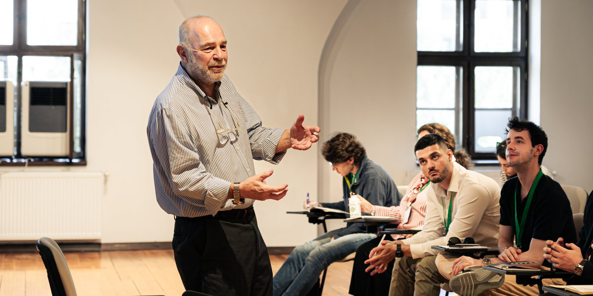

Professor Jarding's course — refined over two decades at Harvard and in more than fifty countries — is now open to a wider audience.
For most of his career, this material was reserved for Harvard Kennedy School students, heads of state, and the executives and candidates who sought him out directly. It is now available as a self-paced course, built from the same paradigm he has spent his career teaching — and used, in one form or another, by presidents, prime ministers, and senior leaders around the world.
This course distills more than twenty years of coaching presidents, prime ministers, and senior executives into a clear, teachable system — one you can apply whether you are addressing a boardroom, a camera, or a crowd. It is the same paradigm behind Harvard's most sought-after course on communication, made self-paced for the first time.
A short excerpt from the course.
A research-based framework for communicating with confidence, clarity, and impact — the same principles Professor Jarding has taught for two decades, distilled into a system you can put into practice immediately.
A proven communication framework, developed over two decades of coaching global leaders and refined in the Harvard classroom.
How to communicate with confidence, clarity, and emotional impact — without relying on scripts or memorization.
Techniques for making a message memorable and persuasive, drawn from decades of campaigns and classrooms alike.
How to recognize and correct the habits that quietly undermine presence and credibility.
How to deliver a speech or interview that feels authentic and human — not rehearsed or mechanical.
How to create the kind of first impression that supports the credibility and authority leadership requires.

For sixteen years at Harvard's Kennedy School, this course was one of the most selective on campus — twice nominated for the Most Influential Course Award, and voted the most sought-after class by the students who took it. Beyond Harvard, the same paradigm has been taught to eleven presidents and prime ministers, a Nobel Peace Prize laureate, and leaders in more than fifty countries.
Making it self-paced means the method that once required a seat in his classroom, or an invitation to his consulting practice, is now available to anyone who wants to communicate with the same clarity and authority.
The full course, workbooks, and speech & interview guides — with lifetime access.
View the course →Hosted at jardingedu.com